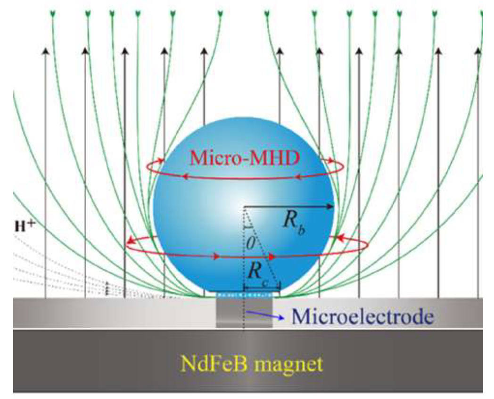
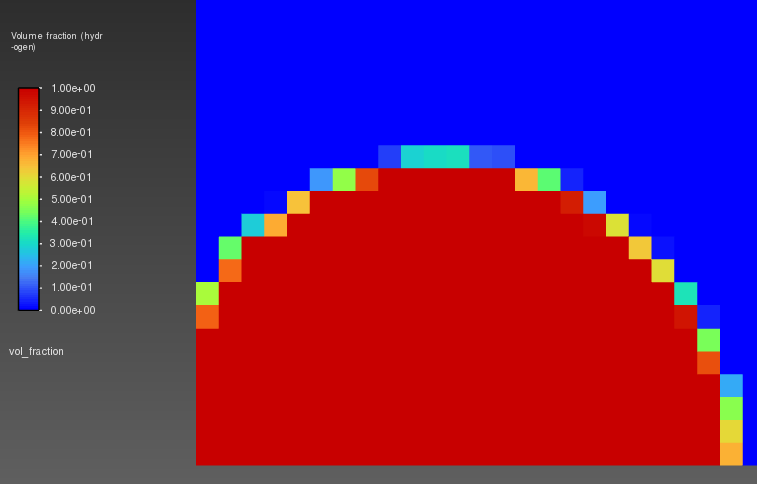
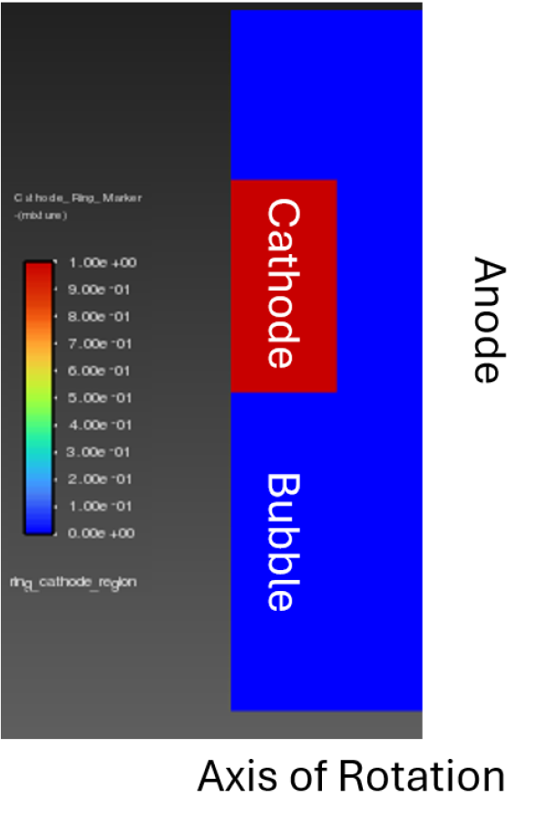
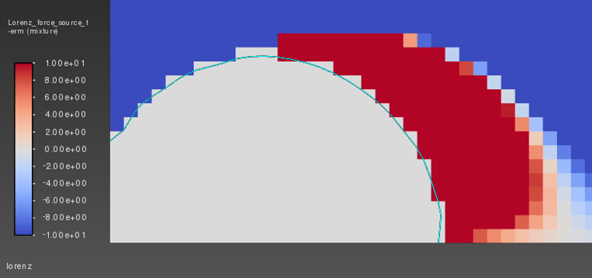
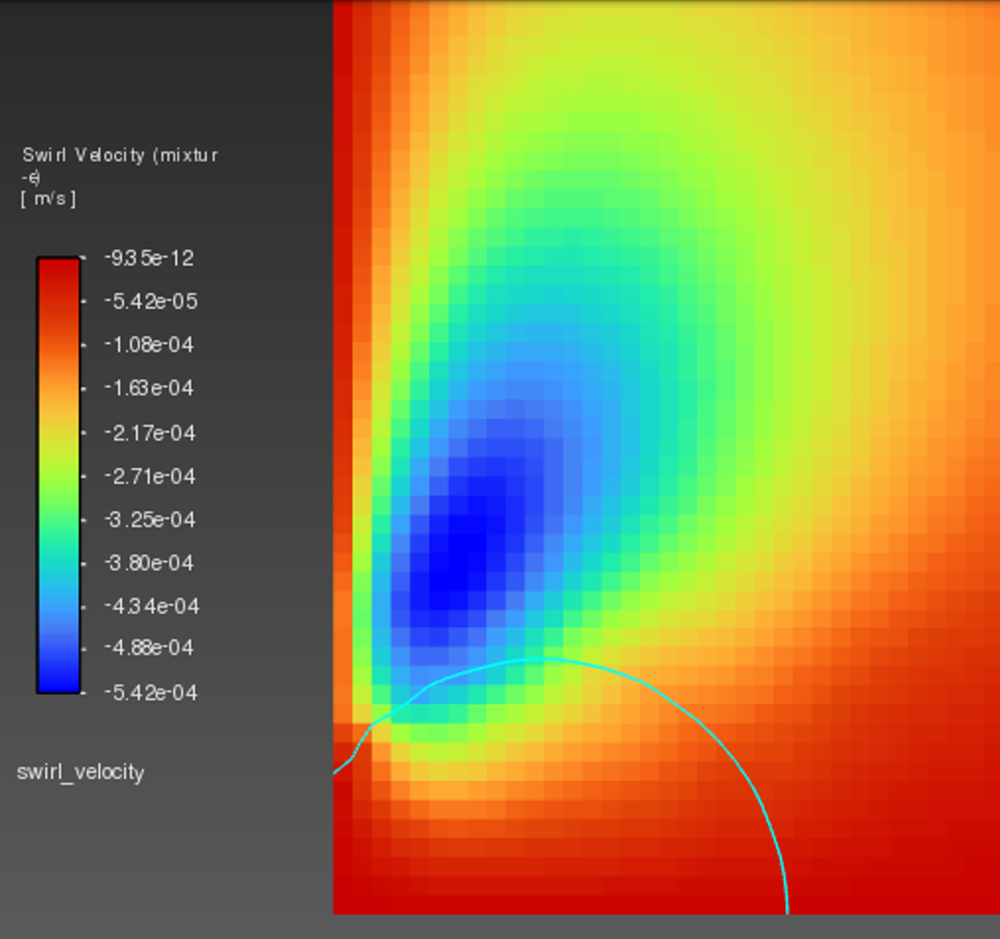
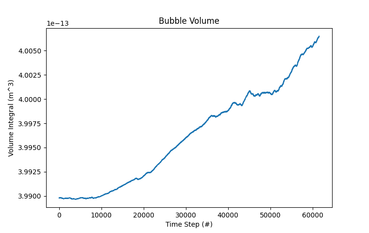

I am replicating a published hydrogen bubble growth study at KIMSLAB, extending the base VOF model with a custom C/C++ User-Defined Function (UDF) that applies the Lorentz force as a momentum source term, capturing the Micro-MHD convection that governs bubble departure at electrode-normal magnetic fields. This work builds directly on prior PMD experience, applying the same VOF multiphase framework to a coupled electro-magneto-hydrodynamic problem. Key aspects of the MHD bubble system:
For this project, I:
DEFINE_PROFILE and F_LOOP, confining current flux to the electrolyte-bubble contact ring rather than the full electrodeFL = j × B) using DEFINE_SOURCE and DEFINE_EXECUTE_AT_END, computing current density from the gradient of a user-defined scalar (UDS) potential fieldThis project demonstrates proficiency in custom Fluent UDF development, multiphysics CFD (VOF + UDS + MHD), and electrochemical bubble dynamics, directly relevant to propulsion, electrolysis, and life-support fluid systems.




Download the Reference Study (Zhan et al., 2022, Physics of Fluids)
| Parameter | Value |
|---|---|
| Model Type | 2D Axisymmetric Swirl |
| Domain Size | 1.8 x 3.6 mm² (0.7 x 0.7 mm² refined bubble region) |
| Current Density / Magnetic Field | 1.5 A/cm² | 415 mT |
| Initial Bubble / Contact Diameter | 100 µm / 62.9 µm |
| Multiphase Model | VOF, Geo-Reconstruct interface tracking |
| Pressure–Velocity Coupling | PISO |
| Custom UDFs | Lorentz force source, ring cathode flux profile, bubble nucleation seed, direct injection / interfacial mass transfer |
| Densities (H₂ / Electrolyte) | 0.0549 kg/m³ / 998.2 kg/m³ |
Current Status: The Lorentz force, ring cathode, and dissolved H₂ transport UDFs are implemented and individually validated against expected qualitative behavior (current density and Lorentz force concentrated at the bubble base, matching the reference study). I am currently debugging a timestep instability tied to Young-Laplace pressure field initialization — the referenced CFD paper does not initialize the pressure field and instead lets the Continuum Surface Force model build it naturally, which increases iterations per timestep in the short term but resolves the oscillation over the full run. Next steps are running the corrected case on HPC and validating bubble growth diameter against the experimental curve from the reference study.